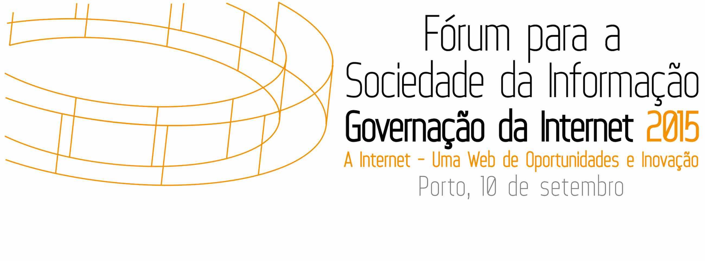

Internet Society (ISOC) - Portugal
Eventos e Posições - 2011 a 2015

A associação ISOC Portugal Chapter foi fundadada no final de 2010 pelo que as suas primeiras atividades tiveram lugar no ano de 2011. Os anos de 2011 a 2013 coincidiram com um período inicial em que a associação esteve sedidada na sede da FCCN e foi por esta fundação muito apoiada. O ano de 2013 foi marcado pela organização em Lisboa do EuroDIG 2013, no qual o ISOC PT esteve muito envolvido.
Em Junho de 2012, no quadro das suas ações de sensibilização para a importância da adoção do IPv6, o ISOC PT dirigiu uma carta ao Ministro da Economia a sensibilizá-lo para a necessidade da adoção deste protocolo pelos agentes económicos nacionais.
O ano de 2015 foi caracterizado pela participação do ISOC PT na organização de um evento
sobre a problemática do IPv6 na função pública europeia em 9 de Maio de 2015 no IST em Lisboa:
e ainda na participação da organização do Internet Governance Forum - Portugal 2015 no Porto em Setembro e na promoção de um evento / debate em 12 de Maio em Lisboa.

No ano de 2014 o ISOC PT participou na
organização d Internet Governance Forum - Portugal 2014 que teve lugar em 4 de Junho no Pavilhão do Conhecimento em Lisboa.
O grande evento em que o ISOC PT participou em 2013 foi o EuroDig 2013, que teve lugar em Lisboa no Hotel Altis nos dias 20 e 21 de Junho de 2013. Adicionalmente o ISOC PT esteve presente num encontro sobre Economia Digital que teve lugar em 14 de Março na Universidade do Algarve.
O ano de 2012 foi, para o ISOC PT, marcado pela organização do
dia do lançamento do IPv6, o dia 8 de Junho, e pela participação na organização do Internet Governance Forum - Portugal 2012 que teve lugar em Lisboa no dia 10 de Julho.
No seu primeiro ano de atividade o ISOC PT promoveu ou organizou diversos eventos: o Dia Mundial do IPv6 , no dia 8 de Junho de 2011, e uma sessão pública de discussão sobre a Net Neutrality em 30 de Novembro de 2011 em Lisboa.